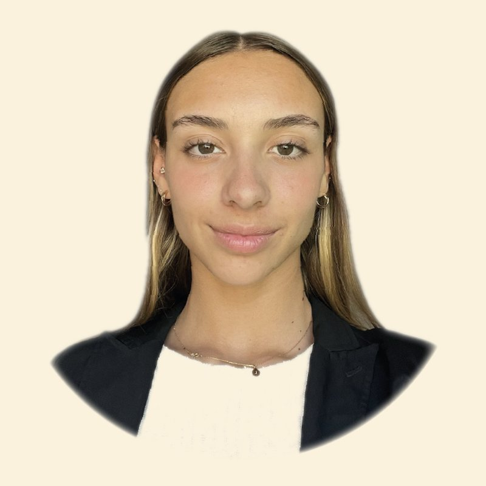

The sky is the limit.
I'm from Argentina, the country where I've lived all my life and that taught me its culture and everything I know. Thanks to this country, to my family and to the beautiful people around me, I learned to navigate this world in the most grateful and happy way possible.
I'm a true believer that learning is a constant process of personal growth, where each experience shapes and transforms us. Every situation I go through, academic or personal, is an opportunity to grow — life always tries to teach us something, even when the lesson has a bitter taste.
I entered Universidad Torcuato Di Tella to develop my creative and technical skills in an excellent academic environment. I'm also interested in joining an exchange program, to broaden my perspective and enrich my training, helping others achieve the same along the way.
Bilingual since school. Trinity College London and Cambridge AS certified.
Reply within two working days, usually one.